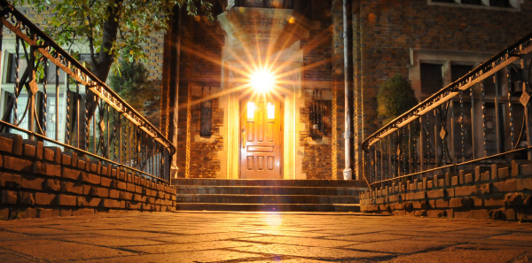

Yechidus Under the Watchful Eyes of the KGB
In 5728/1968, a historic visit took place when Chief Rabbi of Moscow, Rabbi Yehuda Leib Levin z”l, went to the United States. Every step he took and every word he said was monitored by Russian authorities. * During the visit, he had private audiences with the Rebbe which were also monitored by his handlers. * Menachem Ziegelboim tells of this extraordinary visit for the first time with a transcript of the yechidus and an emotional sicha of the Rebbe against those who stood in the way of his guest during his visit.

Jews in the United States were excited when they heard that R’ Yehuda Leib Levin, the Chief Rabbi of Moscow, would be visiting Jewish communities and institutions in the United States. Russia in those days, under the iron fist of Leonid Brezhnev, seemed like another planet, distant and incomprehensible. A Jew coming from there, all the more so someone as illustrious as the Chief Rabbi of Moscow, was quite an attraction.
Many tumultuous incidents took place during his visit, some of them in public and some behind the scenes.
A STORMY LIFE
R’ Yehuda Leib Levin was born in 5654/1904 in Nikopol in the Yekaterinoslav district. His father was R’ Shmuel Eliyahu Levin, who served as the rav of Nikopol. He was a descendent of a line of rabbanim including R’ Refael HaKohen, the Av Beis Din of Hamburg, author of Toras Yekusiel.
As a boy, he learned Torah with his father and then in Yeshiva in Niezhin and later Yeshivas Knesses Yisroel – Slobodka, headed by R’ Boruch Ber Leibowitz. He learned there until 5674. In 5676 he received smicha and he served as rav in the village named Grishino and then in other cities. In 5683 he was appointed the rav of the large city of Grishino (Krasnoarmeysk) near Yekaterinoslav (Dnepropetrovsk). With the invasion of the Nazis in 1941, all the Jews of the city left for the east, including R’ Levin. He settled in a small town in Uzbekistan. With the end of the war he returned to Grishino.
In 1946, he was appointed as rav of Dnepropetrovsk, but in 1953 he was forced to leave the city upon being persecuted by the authorities. He was levied heavy taxes because he was the rav. Once again he went to distant Uzbekistan. For a number of years he wandered among cities and communities; in each place he would write ST’aM and check Sifrei Torah and fix them.
In 1956, he was invited to Sukhumi in Georgia where he met R’ Shlomo Shleifer, who served as rav of Moscow at that time. This meeting led to R’ Shleifer inviting him to Moscow and his getting involved in preparing for the opening of Yeshivas Kol Yaakov, which was being opened with permission from the government. R’ Levin accepted the offer and went to Moscow where he gave shiurim in Gemara to talmidim in the yeshiva.
That was the only yeshiva in Russia which was legal. Of course, it operated under the watchful eyes of the government.
R’ Shleifer died suddenly in 1957 of a heart attack. His family attributed this to the tremendous pressure he was under.
THE RABBINATE
Now that the position was vacant, the members of the community considered R’ Levin as a possible candidate. He was a rav with ordination, knowledgeable in Halacha, relatively young, with a good command of Russian. The shul administration, known as the “council of twenty,” decided to choose him as a candidate as rav of Moscow. This first had to receive the stamp of approval from the government’s religious department, which did approve his candidacy.
In his new position, R’ Levin worked on republishing the Siddur HaSholom. He printed about 10,000 copies of this Siddur which was popular among Russian Jews. He was also able to obtain various easements on the part of the government to open a matza bakery before Pesach. The level of the kashrus of meat also went up, albeit in limited fashion.
The big shul in Moscow was kept open under communist rule, operating under the watchful eyes of KGB agents. A few Jews were permitted to daven there, mainly old people, and this was merely to show the world that Jews could pray. The Yeshivas Kol Yaakov also played this role.
R’ Levin tried to preserve Judaism in Moscow, as the following incident with R’ Wolf Bogomolny shows. R’ Wolf was a young man, G-d fearing, and one of two shochtim and mohalim who faithfully served all the Jews of Moscow. One day, he was caught as he brought a wagon laden with packages of matzos to those who had ordered them. He was taken to the police station and the matzos were confiscated. He was brought to court where R’ Levin was also asked to be present. Needless to say, R’ Levin was in a tight spot. As the official rav, he could not justify an illegal activity, but … In the end, R’ Wolf was sentenced lightly to “only” one year in jail.
When the year of his sentence was over, he bravely returned to sh’chita and mila. He also began trying to obtain a visa for Eretz Yisroel. When R’ Levin heard about this, he expressed his strong opposition to the move, because in Moscow there were only two shochtim and mohalim who served not only the huge Moscow community but also the neighboring cities. R’ Bogomolny was upset about this. R’ Levin, as a responsible leader, did not suffice with that but took action to convince him to remain in Moscow.
In the meantime, R’ Wolf was surprised to receive a visa to leave Russia for Eretz Yisroel. It seems that the very reasons that R’ Levin used to dissuade him from leaving were the very same reasons the government wanted him to go. The government wanted the “klei kodesh” (those involved in holy works) to leave so that religious observance would wane. That left Moscow with only one shochet and mohel, just enough to be able to show tourists that the Jewish community had sh’chita and mila, everything religious people need.
R’ Levin worked to enlarge the yeshiva, which was no simple matter. The number of students shrank. The students were adults, since boys till the age of 18 were not allowed to learn in yeshiva; it went against Soviet law. When new people applied, the government made life very difficult for them and screened them extensively. R’ Levin worked carefully but forcefully in order to get whatever concessions he could, as the following story demonstrates.
The Chachomim in the Georgian community decided to send a group of fifteen students to the yeshiva in Moscow along with a sum of money as tuition. However, the Soviet religious ministry refused to approve their acceptance into the yeshiva. R’ Levin stood up to the government and insisted on the permits. He showed that the yeshiva’s coffers were empty and the number of students was minimal. If they did not accept the group, he would have no choice but to close the yeshiva.
The government did not want the yeshiva to close, for they wanted to show the world that there was freedom of religion. R’ Levin guaranteed that after they finished learning in the yeshiva and left with smicha, they would only serve in Georgia. His pressure did the job and the government backed down. The young men from Georgia were accepted into the yeshiva. After a number of years of study, they left with smicha for sh’chita and mila and knowledge in other areas of Halacha as well. They returned to their communities as Chachomim and did a great deal to strengthen Judaism in their communities.
WHEN THE CHIEF RABBI WAS BETWEEN A ROCK AND A HARD PLACE
As part of his job, R’ Levin was invited to participate in official celebrations that took place in the Kremlin. He also received guests and official delegations from abroad. He traveled twice to Romania and Yugoslavia as part of an official delegation of representatives of the religious community in Moscow and they were the guests of the Jewish communities in those countries. The purpose of these trips was less to establish ties with our fellow Jews in those countries than it was a political move by the Soviets to show Russia’s putative positivity towards Judaism.
In 1968, R’ Levin made a trip to the United States, a trip which made waves within Jewry worldwide. He had just undergone a serious operation and was still weak when he received the invitation to visit the US. The ones inviting him were an odd coalition of two opposing organizations. What they had in common was a bitter war against Zionism. They were an anti-Zionist organization called “The American Council for Judaism” and the Neturei Karta. They found favor with the Soviets, who told R’ Levin to go and attend their meetings. This served their interests against Zionism especially following the unexpected and outstanding victory of the Six Day War, the year before.
R’ Levin was placed in an awkward position. On the one hand, he wanted to meet with American Jewry; this was a golden opportunity for him. On the other hand, he knew that this trip would solely serve the interests of the Soviet Union. Throughout the years, R’ Levin was forced to defend Soviet policy regarding the Jewish question. His hosts also knew that the visit served the needs of communist propaganda so they could say, “See, we’re kosher.”
As part of his trip, he was scheduled to address a large crowd in New York. Thousands waited eagerly to hear the speech of the Chief Rabbi of Moscow. In the first part of his speech, R’ Levin spoke words of Torah and Agada which did not generate any unusual reaction. In the second part, he was asked to respond to questions about the state of Jews and Judaism in the Soviet Union.
He had no choice, and his responses were in line with official Soviet propaganda as was expected of him. He extolled Jewish life in the Soviet Union and the audience knew that what he was saying was a cover-up. A commotion in the hall ensued and people protested until he had to stop speaking and leave.
Rabbi Pinchas Teitz, a distinguished rav in New Jersey, took care of the rest of R’ Levin’s tour. R’ Teitz himself made numerous trips to Russia starting in 1964. He, along with other Orthodox figures, met R’ Levin and he became their guest. He visited yeshivos and various Jewish institutions and became acquainted with American Jewry, which greatly excited and moved him.
HISTORIC VISIT TO THE REBBE
R’ Levin had a private audience with the Rebbe and was graciously welcomed. The very fact that the meeting took place was an enormous chiddush, since every step R’ Levin made had to be approved by the Soviets. Here, they gave permission for him to meet with the greatest enemy of communism, the Lubavitcher Rebbe.
It was a Thursday, the second day of Rosh Chodesh Tammuz 5728/1968, when R’ Levin walked into Gan Eden HaElyon. Every word was documented and supervised by “Big Brother” in Moscow. Perhaps this is the reason that the conversation was as formal as it was. The communists made the visit conditional that it wouldn’t be photographed, but one picture was secretly taken seconds before he entered the Rebbe’s room.
The Rebbe had their conversation recorded with a tape recorder hidden under the bench that was brought into his room. What follows are some excerpts from the yechidus from the recording that was publicized by the Vaad Hanachos B’Lashon HaKodesh.
The Rebbe began by asking, “No doubt you’ve rested a bit,” and mentioned the Chazal, “l’fum tzaara agra” (according to the pain is the reward). Then the Rebbe referred to R’ Levin’s tour of the US, “As I’ve heard, you have been shown in the course of your visit in the United States the development of the yeshivos here.” (He also asked whether R’ Levin had met former friends from yeshiva or their children).
R’ Levin: “The truth is that when I traveled here, I did not imagine that it had become such a place of Torah. Thirty-forty years ago, America was ‘an empty pit that has no water’ – ‘there is no water but Torah.’ While today, Boruch Hashem! And also Beis Yaakov schools through which Jewish homes are built!”
To the Rebbe’s request for regards from “over there,” R’ Levin began by telling him about Lubavitcher Chassidim who had left Moscow leaving a void. The Rebbe commented, “When they go, probably others come to take their place, from the Moscow area or other parts of Russia, for Jews generally try to live in a big city that has a large number of Jews.”
R’ Levin told the Rebbe that there wasn’t anybody to take the place of those who left, for there were difficulties with registering to live in Moscow and its environs. The Rebbe, knowing the laws of the Soviet Union, suggested that people could get residential permits by marrying residents of the city. R’ Levin agreed and said that recently a new shochet had been appointed who married a girl from Moscow.
R’ Levin: “If there are no kid goats, there are no adult goats.”
The Rebbe (with a smile): “When wanting to hear regards, one also wants to hear something good … As is known regarding the detriment of negative speech – that the talk itself awakens the matter. And since ‘greater is the measure of goodness than the measure of retribution,’ when talking about something positive, this arouses the side of good.”
R’ Levin: “Something good? I will tell you about Samarkand. There is a nucleus of young men and they conduct themselves well.”
The Rebbe (smiling): “Why do you send me to Samarkand? I want to hear what is going on in Moscow! As the Mara D’Asra of Moscow, why should you think about other places?”
R’ Levin: “There are young Chabad Chassidim and young Litvishe men and they attend shiurim, twenty men sitting and learning, but a few of them left.” Here he mentioned the names of the few who left Russia or died.
The Rebbe asked whether the shiurim took place in the shul and R’ Levin elaborated. “In the morning, we generally learn a daf Gemara with Tosafos in the style of pilpul for about two hours. In the evening we also learn a daf Gemara, Shulchan Aruch and Mishnayos. On Shabbos – Chumash, and Shabbos afternoon – in the summer, Pirkei Avos and in the winter, Midrash, in addition to saying Divrei Torah at the table at the Seuda Shlishis.”
The Rebbe: “It used to be that Ein Yaakov was learned between Mincha and Maariv, the Agada part of Torah ‘that draws a man’s heart,’ and which also has topics about good character.”
R’ Levin spoke about two maggidei shiur who became sick and could no longer do their jobs, and he mentioned the names of those who replaced them. The Rebbe reacted in surprise, “They say that on Shabbos several hundred come to daven. Surely among them you can find other people who can give shiurim.”
A CAREFUL CONVERSATION
The Rebbe asked about the Nusach HaT’filla that was used in the big shul in Moscow when Jews of all types davened there. R’ Levin said that on Shabbos they davened Nusach Ashkenaz, but they were usually not particular and whoever was the chazan davened his own Nusach. In the “second room” they davened Nusach HaAri.
The Rebbe addressed one of R’ Levin’s escorts, the chief chazan from the Leningrad community and asked him about the Nusach HaT’filla in his city. The chazan said that in the big shul in Leningrad they also davened Nusach Ashkenaz, while in the Chassidic shul and the small shul they davened Nusach HaAri.
The conversation went on with the Rebbe carefully inquiring only about those things which could be spoken about freely like the Nusach HaT’filla, which Siddurim the people used, the addition of a calendar for Rosh Chodesh and Yomim Tovim in the Siddurim, translating the Nusach HaT’filla into Russian, etc.
R’ Levin said that before he reprinted the Siddur, Siddur HaSholom, he had to translate it page by page for the government so they would understand what the t’fillos said.
The Rebbe asked what they did in recent years when difficult Halachic questions arose. R’ Levin said that he was in touch with Rabbi Moshe Feinstein, and he told about some chalitza questions that had arisen. The Rebbe said that he heard from a woman who had, in the meantime, moved to Eretz Yisroel, that R’ Levin had arranged her chalitza in Moscow and had helped her get a visa despite the difficulties. R’ Levin affirmed this.
The Rebbe asked about arranging gittin (divorces) and about Sifrei Torah and holy books that remained in shuls in cities and towns around Moscow and were brought to Moscow. R’ Levin said the Sifrei Torah were bought secretly and eventually sent to Eretz Yisroel. Likewise, whoever went out of Russia took many s’farim with him, but many s’farim were still left (including libraries of Jews who died) in the shul’s library.
The Rebbe pointed out that in any case, the shul needed sifrei Halacha, saying how vital this was for chinuch and for observing Halacha. “I remember that in my time it was rare to find a Kitzur Shulchan Aruch in Russia. Most of the time they used a Mishna Brura or they learned Shulchan Aruch with the Beer Heiteiv. When I came here, I saw that the Kitzur Shulchan Aruch could be found all over and was also translated into several languages.”
In the next part of the conversation, the Rebbe asked about the shuls in Moscow and Leningrad. R’ Levin told him about the renovations taking place. The Rebbe commented that many tourists visited these shuls and said, “Even those who don’t go up to the Torah here, when they go there, they get an aliya, with a bracha before and after, and with a hat and yarmulke. So, since all the visitors go to shul, you have many opportunities of Hachnasas Orchim and ‘hospitality is greater than welcoming the Sh’china.’”
Since both the Rebbe and R’ Levin were in Yekaterinoslav in their younger years, the Rebbe mentioned this and even noted that he knew R’ Levin’s brother. He said they met in Rostov in 5684 or thereabouts. R’ Levin said that his brother left handwritten manuscripts full of chiddushim, but most of them had gotten lost over the years except for one on the topic of the debate between the Maharalbach and the Mahari Beirav over the words of the Rambam about the possibility of renewing the smicha of the Sanhedrin nowadays.
At a certain point, one of the guests from Russia took part in the conversation and responded to the Rebbe’s earlier request for good news from Russia. The man said, “I often go to Moscow, and every time the shul is busy with minyanim for t’filla. In the morning there are minyanim almost all the time, from morning till noon. In the evening, the rav always sits and learns. Whenever I come, he is with a daf Gemara. I once went to the shul and did not find the rav, and I went to his house and found him writing a get. He is always busy with mitzvos!”
The Rebbe smiled broadly and turned to R’ Levin and said, “Good news like this – why should I hear it from the guest and not from the Mara D’Asra?”
The guest said that R’ Levin was humble and did not want to talk about his k’hilla. “But I, as an outsider, can testify to this.”
R’ Levin affirmed that on Shabbos there were many minyanim for davening and said that on Shabbos they davened in four places in the shul: the first minyan was in two places and the second minyan that followed it was also in two places, in the second room and the big shul.
As a response to the Rebbe’s question, R’ Levin said that he did not have occasion to visit other cities outside of Moscow.
Toward the end of the visit, the Rebbe asked how long their visit to the US would be. R’ Levin said he was returning the following Monday, that he could extend the visit but he did not have the strength; throughout the visit, from morning till midnight, they took him from place to place and he had to speak everywhere.
The Rebbe said, “In general, ‘living in cities is difficult,’ and all the more so for someone unaccustomed to all the commotion.”
R’ Levin said that Moscow wasn’t smaller than New York (thus defending the grandeur of Moscow which he had to represent honorably).
The Rebbe: “But there you don’t need to travel from place to place. Also, avodas perech is not hard work but work that one is not accustomed to, as we see in the Gemara that ‘women’s work done by men’ is called avodas perech. The same is true when going to ‘another area that one is not accustomed to.’”
***
The Rebbe and R’ Levin parted late at night. The Rebbe said, “A big yashar ko’ach for the visit, go in peace, with joy and gladness of heart, and may we hear good news.”
R’ Levin and his entourage returned to the hotel in Manhattan that they were staying in. The conversation with the Rebbe had gone well with neutral topics, topics that would not be dangerous to R’ Levin. The important and burning issues that were vital in his ongoing leadership under communist rule could not be raised because there were many listening ears.
R’ Levin’s granddaughter had yechidus years later and the Rebbe said to her, “Your grandfather was here and he asked for a bracha for his children and grandchildren and now you are here.”
LESSONS FROM THE HISTORIC VISIT
R’ Levin was the rabbi of Moscow under the auspices of a wicked government. This is why he had to keep his mouth closed about the true state of Judaism behind the Iron Curtain. There were many who attacked him for this and judged him negatively, but the Rebbe viewed him favorably and even praised him publicly.
Ten days later, at a farbrengen in honor of 12 Tammuz, the Rebbe spoke about R’ Levin’s visit to the US, about his impact on American Jewry, and he spoke sadly about American Jewish leaders missing an opportunity at the gathering that had been interrupted, when they demanded that R’ Levin speak forthrightly about the state of Judaism in Russia.
The Rebbe said that the fact that a rav came from a distant country, dressed as a rav, should have greatly inspired the Jews in America. However, instead of people seeing him and the Judaism that he represented as an example of how a Jew ought to lead his life, a life of Torah and mitzvos in free countries, they were preoccupied with bothering him with questions about the state of Judaism in the Soviet Union.
“The first obligation incumbent upon those gathered was to look at the crowd and see whether it would be possible to inspire them to increase in Torah study, the fulfillment of mitzvos, in fear of Heaven, etc. What actually happened was that there was one gathering, a second gathering, a third and a fourth, and it did not occur to anyone to do this!”
The Rebbe spoke about the “good intentions” of the leaders of Jewish organizations in America to help the Jews of the Soviet Union who were in distress and captivity:
“The help for those three million Jews through all these meetings is doubtful, but one thing is certain: If, at the gatherings, they spoke about Family Purity, about kashrus, chinuch and Shabbos observance, one Jew, two Jews, one family, two families, would have been inspired …”
Then the Rebbe said there were people who tried to pressure R’ Levin and to get him to say things that were not in line with the official protocol:
“The man in whose honor they made the gathering showed a picture of what is happening there, the door of a yeshiva and the door of a mikva. He was asked: but what is going on behind the door?
“This question was only meant to aggravate, because he knows what is happening on the other side of the door and the one asking the question knows, but he cannot respond because in addition to the fact there is no point, it could entail danger. According to the din, it is forbidden to ask a question like this where the questioner knows the answer and knows that the person being asked cannot respond, since this causes pain to a Jew.”
The Rebbe added:
“Here we see how great is the concealment in the world, where attention is not paid to that which is most clear and obvious. A Jew traveled thousands of kilometers from overseas and showed a picture of a mikva and a yeshiva, when everyone knows that there is no purpose in showing these pictures. That Jew is no fool and he knows that he is not fooling anyone, but he has no choice as he is ‘under orders’; the listeners also know that this Jew is not living in error and he does not want to mislead them, but they only wanted to put on a show… If the questioner thinks that he came up with a brilliant idea to ask this question about the situation that prevails overseas, he should not delude himself.”
Here the Rebbe added that the questions were not asked by happenstance but were put into the mouths of the questioners by Heaven to inspire them themselves:
“One goes by the title of scholar and another by the title of rabbi along with all the other titles and they get their pictures published in the newspaper and on television by a gentile journalist who will show them off to his fellow gentiles… if so, why don’t you use this in order to worry about ‘the poor of your own city?’”
The Rebbe said they should follow R’ Levin’s example and that the leaders of American Jewry should learn from him:
“When a Jew comes from this place, where for fifty years there has been religious persecution and the sentence of death, and nevertheless they see how he looks, their first thought should have been a lesson: If after fifty years of decrees, a Jew can be alive and travel, then all the more so when living in a place without decrees, surely they ought to want to appear as this Jew appeared! … It is possible that they brought a Jew here with a full beard and a long sirtuk so they will look at him and say: here is a living ‘Musar lecture.’
“Although quite some time has elapsed since this Jew [R’ Levin] returned to his place, this idea did not occur to anyone.”
Here the Rebbe alluded to the reasons that led to R’ Levin’s unusual visit to the US as well as the identity of those who extended the invitation:
“How is it possible to suggest that Hashem would allow a decree of fifty years and after that arrange things so that (with or without demonstrations, through this or that organization, Zionists or no Zionists) this Jew is brought here, so that through this there would be an arousal regarding matters of Torah and mitzvos at a time when everyone screams that this was not their intention?”
MAN OF HONOR
This sicha of the Rebbe made waves among the leaders of American Jewry, even among the Reform and Conservative, as well as on many of influence within the ultra-Orthodox world (“As a result of this talk, I acquired some ‘good friends,’” said the Rebbe at the end of that sicha).
R’ Levin served as Chief Rabbi of Moscow for another three years and then passed away in 5731. A year after the visit, in the winter of 5729, the administrative council of the shul, with the encouragement of the Soviet religious ministry, held a festive event to mark R’ Levin’s 75th birthday. This event was exploited by the Soviet authorities, as they invited many rabbis from Eretz Yisroel and western countries in order to convince them of the Soviet Union’s openness to religious matters. At this event too, R’ Levin was forced to navigate with great wisdom the delicate balance between what is proper and the ever present government pressures.
***
R’ Levin’s funeral took place with many people in attendance. The leadership of the community rented many cars to take the people to the cemetery. Thousands of Russian Jews participated in the final honor given to the man who represented them with great dignity to the Soviet authorities as well as to world Jewry.
THE REBBE REMINISCES
During R’ Levin’s meeting with the Rebbe, R’ Levin spoke about the fact that in Moscow there had lived the “Poltava rav” [passed away in 1965], who authored a comprehensive explanatory commentary on the Jerusalem Talmud and had worked long and hard to edit and correct the text of the Jerusalem Talmud of all the errors. Being a great scholar, he supported his corrections with comparisons to the Talmud Bavli. [This work was smuggled out of Russia after his passing. The first volume was published in 1980, and a number of other volumes have been published since].
The Rebbe then said something about his childhood, which he seldom did:
“I met the rav of Poltava whom you mentioned, who wrote Tevuna on the Rambam. He visited our house in Yekaterinoslav (which is near Poltava) with his book, which was small and thin. He was still a young man whose beard hadn’t yet completely filled in (smiling: I was even younger, I think, before having a beard at all). He remains in my memory because of a discussion between us about the Chanuka lights, regarding the question in his book about how they could fulfill their obligation to light the Menorah with miraculous oil when the verse says it must be olive oil. But when I saw him, his main interest was in pilpul, in give-and-take, while editing is a talent in itself which requires precision etc.”
Beis Moshiach (staff). "Yechidus Under the Watchful Eyes of the KGB." Beis Moshiach, no. 915 (February 13, 2014).